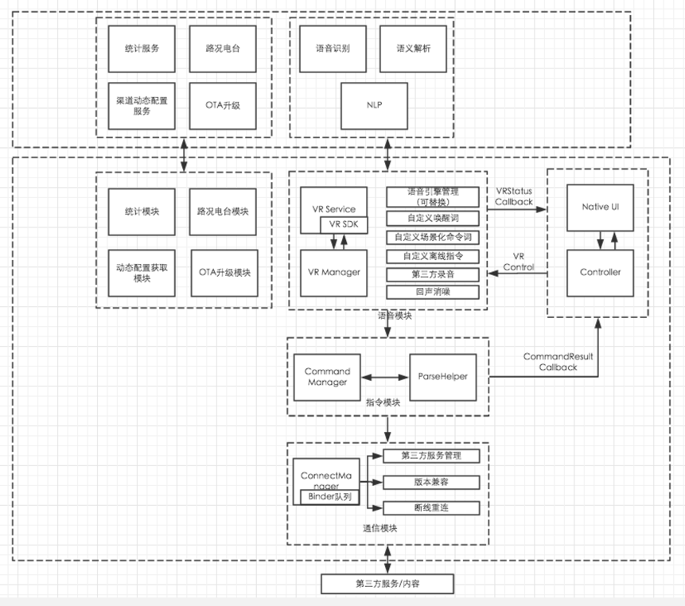
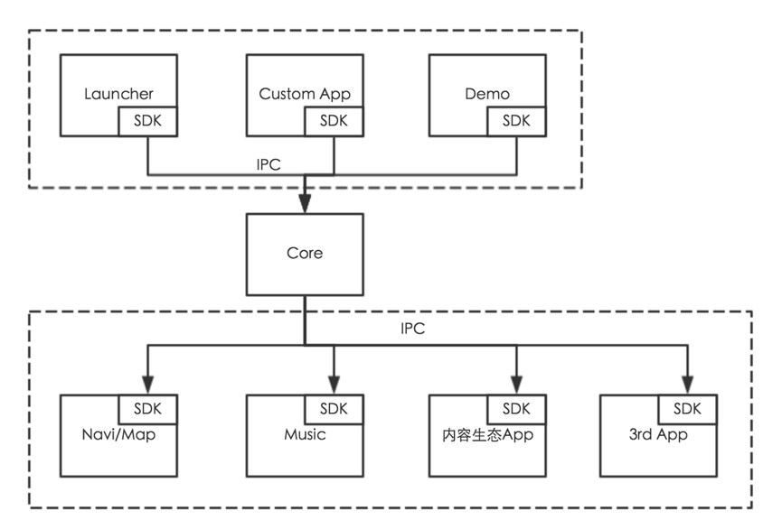
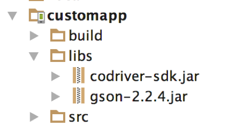
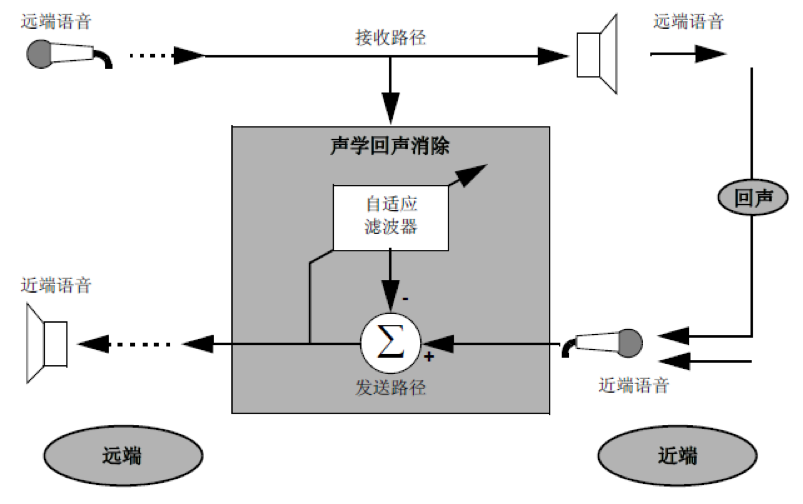
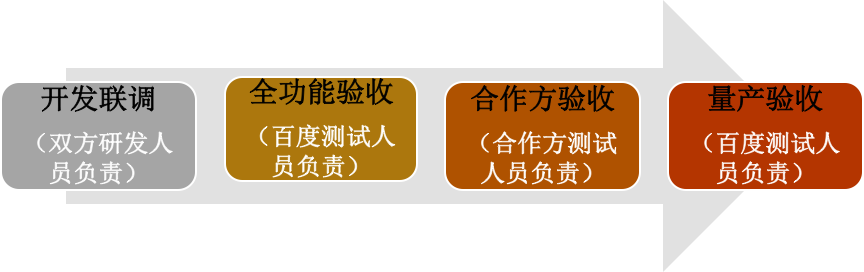

百度DuerOS车载版接入指南
百度DuerOS车载版，版权归百度公司所有，侵权必究
联系email：dueros_feedback@baidu.com
版本历史
| 版本号 | 修改内容简介 | 修改日期 | 修改人 |
|---|---|---|---|
| V1.0.0.0 | 创建 | 2016-12-13 | DuerOS车载版 Team |
| V1.0.0.1 | 增加DuerOS车载版接入、打断式交互、MIC设计参考等三个章节 | 2017-04-28 | 欧阳能钧、赵科 |
| V1.0.0.2 | 增加云端语义服务接入资料 | 2017-06-06 | 杜秋 |
| V1.0.1.0 | 增加蓝牙电话、在线更新以及UI规范等内容 | 2017-07-24 | 张龙、伟亮、赵科 |
| V1.0.3.0 | 调整SystemTool，MediaTool，CdTTSManager接口 | 2017-08-24 | 郭敬、宋晔 |
简介
DuerOS车载版是什么
百度DuerOS是百度推出的对话式人工智能系统，广泛支持各类硬件设备，已具备70多项能力。百度DuerOS车载版是针对联网汽车，以智能语音为人机交互方式，基于百度的语音技术和自然语言处理技术等AI技术打造的全语音交互整体解决方案。
DuerOS车载版可以提供语音交互、电话、音乐和导航四大功能。车主在驾驶过程中可以随时通过语音完成导航、音乐、电话等操作，可以让驾驶者从繁琐枯燥的驾车程序中解脱出来，让行车更安全、便捷和经济，并且借助于百度所连接的众多O2O生态获取停车、加油、保养等车后服务。
本文档是DuerOS车载版 语音交互接入详细指南，为合作方在车机端接入DuerOS车载版的开发提供硬件、系统和软件实现等方面特别是语音交互集成的详细指导。
怎么接入DuerOS车载版
DuerOS车载版暂时不支持个人开发者的接入。
DuerOS车载版目前主要面向车厂、车机方案商、芯片商、运营商等开放接入，下面简称DuerOS合作方。接入流程有
- 商务沟通：DuerOS合作方联系百度商务(iov-bd@baidu.com),进行NDA等合同签署。
- 开发包获取：完成商务流程后，DuerOS合作方即可获得DuerOS车载版发布包下载地址。
- 接入适配：拿到发布包后，根据文档及自己的需求进行适配接入，完成接入后DuerOS合作方需根据百度提供的验收文档 进行验收。
- 百度验收：在DuerOS合作方验收通过后，邮寄预量产的设备给百度，由百度进行验收，百度验收通过的设备都将获得授权、发布签名和认证。邮寄地址请联系百度商务获得。
- 量产发布：由DuerOS合作方负责，百度可适当参与PR等工作。
如下情况，请联系百度商务(iov-bd@baidu.com)沟通确定。
1.针对前装车厂，需要更多紧密研发和耦合获得更好效果的。
2.存在定制需求的。
发布包包含什么内容
目前DuerOS车载版主要发布了Andriod系统的解决方案及在线云API服务。Linux、QNX、IOS等其他系统的解决方案暂未支持。
所有DuerOS合作方只要与百度商务(iov-bd@baidu.com)完成NDA协议签订，就可以获得DuerOS车载版发布包。
DuerOS发布包主要包含了4个APK、1个SDK、文档和示例代码组成。
APK目录
该目录包含4个APK：
- DuerOS_CoDriver_*.*.*_Release.apk：语音交互核心模块，是DuerOS运行必选。
- DuerOS_CarRadio_*.*.*_Release.apk：语音内容生态电台，与语音交互结合提供海量语音内容，如歌曲、戏曲、广播等。
- DuerOS_*.*.*_Release.apk：车载版本百度地图。
- DuerOS_*.*.*_Release.apk：DuerOS Launcher车机程序，可以代替Andriod原生Launcher。该程序有开源代码，可以供厂商修改或参考。
- DuerOSLauncherMirror..*Release.apk：DuerOS Launcher后视镜程序，可以代替Andriod原生Launcher。该程序有开源代码，可以供厂商修改或参考。
SDK目录
codriver_sdk_*.*.*_release.jar: DuerOS提供的SDK，通过该SDK可以与DuerOS进行通信，实现各种SDK开发者定制功能。
Doc目录
该目录主要包含4个说明文档：
- 百度DuerOS车载版基本功能测试Case.xlsx:该份Case是百度已经验证DuerOS支持的功能集合；在DuerOS开发者完成DuerOS集成后，建议先试用该测试case进行验证效果，如果有问题则需要跟进是不是集成存在问题，也可以联系百度需求帮助。
- 百度DuerOS车载版第三方视觉规范.pdf：DuerOS的launcher和部分UI是开源和允许开发者进行修改的，所有UI的修改都需要遵循该规范，否则存在产品验收在百度端不通过的风险。
- 百度DuerOS车载版接入指南.pdf：包含了DuerOS车载版的架构、策略、API、注意事项说明，是开发者的主要参考依据。
- 百度车联网DuerOS XXX项目记录表-模板.xls：这个需要开发者填写，并发送给百度dueros_feedback@baidu.com，百度用于记录接入者情况，
- 百度DuerOS车载版语音指令集.xlsx: 目前DuerOS推荐的指令样例集合。
Demo目录
这是百度apollo开源计划的代码开源一小分支，该目录包含了如下开源代码：
- DuerOS Launcher代码：DuerOS Launcher开源代码，供开发者参考。
- DuerOS CustomAPP代码：该代码主要包含如何使用SDK开发自己的应用与DuerOS进行通信互动。
推荐的软硬件配置
为了让DuerOS在你的设备上运行良好，我们推荐设备配置如下
| Head Unit Specs | Recommended Requirement |
|---|---|
| CPU | Cortex A9 dual cores、 1.2GHz |
| RAM | 2GB |
| NETWORK | 3G、4G |
| STORAGE | 8GB |
| TELEPHONE | BLUETOOTH 4.0 or beyond |
| Mic Input | Support echo cancellation, SNR > 10dB, 16bit, 16KHz, mplitude ∈ (2000、 30000) |
| OS | Android 4.1 or beyond |
| GPS | GPS、A-GPS |
整体架构
DuerOS车载版整体技术架构主要包含三个方面，分别是服务端、客户端以及第三方服务和内容（比如音乐、导航、地图以及FM等应用），主要架构如下图： 
服务端：目前主要考虑统计服务、路况电台、渠道动态配置以及语音识别、语义解析以及NLP等服务的提供。
客户端：核心模块是语音模块和通信模块。语音模块获取用户的输入，与服务端进行交互对用户的语音进行识别、解析，得到语义解析的结果传给指令模块生成对应的指令，并传给通信模块，通过IPC将各指令传递给第三方服务或者内容进行执行，并将执行结果以及数据反馈给通信模块，传递到UI层进行展示。其中语音模块作为客户端的核心模块，主要包括语音引擎管理、自定义唤醒词、自定义场景化命令词、自定义离线指令、第三方录音、回声消噪等模块。除此之外，客户端还需要支持统计埋点、根据服务端配置动态调整策略、路况电台、OTA升级等功能。
语音引擎目前使用百度自主研发的语音识别引擎，封装了语音采集、语音预处理、在线识别、离线识别等功能，识别准确率高达97%。语音播报使用百度自主研发的TTS引擎，目前支持对语速、音调、音量等的配置，支持标准男女声、情感化男女声的TTS播报服务，支持离在线结合的方式。语音模块除了考虑使用百度公司自有的语音SDK外，后续还会考虑灵活支持第三方语音解决方案的需求。
DuerOS车载版与百度汽车版地图进行了深度整合，力图为车主打造出最好的语音导航交互体验。UIUE方面，DuerOS车载版尽量采人性化的诱导式交互、支持用户自定义UI、NLP各类目界面展示以及较为灵活的多分辨率适配方案等等。
DuerOS车载版整体方案需要实现平台化，一方面需要提供SDK、Src Code以及Demo给方案商、Tier One或者OEM进行集成开发，提供语音初始化接口、UI定制、语音唤醒以及场景命令词配置等功能。另一方面需要提供SDK给第三方服务和内容开发商集成，DuerOS车载版核心模块对用户的语音进行识别、解析以后，生成Cammand指令，发送给第三方进行处理执行，同时第三方也可以通过SDK提供的相关接口将执行结果、数据等信息回传给核心模块。DuerOS车载版核心模块集成语音服务（语音识别和语义解析），通信模块（和Custom APP之间的通信）以及和第三方服务或者内容之间的通信。整体架构如下图： 
DuerOS车载版接入
如果想通过SDK与DuerOS进行通信，则需先进行工程配置和初始化SDK，完成这二步操作后就能通过SDK与DuerOS互动，开发定制功能。
工程配置
将codriver-sdk.jar和gson-2.2.4.jar导入到CustomApp工程中

参考CustomAppDemo工程，在AndroidManifest.xml中加入以下代码：
<uses-permission android:name="android.permission.RECEIVE_BOOT_COMPLETED"/>
<service android:name="com.baidu.che.codriversdk.PlatformService">
</service>
<receiver android:name="com.baidu.che.codriversdk.BootReceiver">
<intent-filter>
<action android:name="android.intent.action.BOOT_COMPLETED"/>
<action android:name="com.baidu.che.codrivercustom.START"/>
</intent-filter>
</receiver>初始化SDK
在Application类onCreate()函数中进行初始化。
CdConfigManager.getInstance().initialize(getApplicationContext(), new InitListener() {
@Override
public void onConnectedToRemote() {
// 与DuerOS连接成功：可以调用定制化接口
// 这里初始化各种模块，进行功能定制
}
@Override
public void onDisconnectedToRemote() {
// 与DuerOS连接断开：可以做一些清理工作
}
});休眠唤醒
休眠
设备休眠时可调用此接口，关闭其他相关APK及功能，降低消耗。
CdConfigManager.getInstance().notifySystemSleep();唤醒
设备唤醒后可调用此接口，打开CoDriver唤醒及相关功能。
CdConfigManager.getInstance().notifySystemWakeUp();语音识别ASR
CdAsrManager类负责管理ASR相关的功能，通过CdAsrManager.getInstance()获取单例。
自定义唤醒词
addWakeUpWord方法设置自定义唤醒词，实例代码如下：
CdAsrManager.getInstance().addWakeUpWord("你好百度汽车");可以多次调用该接口来添加多个唤醒词，但唤醒词的个数建议不超过三个，以便取得最佳唤醒效果。
对话流控制
对话流的打开和关闭可以通过openDialog()和closeDialog()实现。
CdAsrManager.getInstance().setAsrTool(new CdAsrManager.AsrTool() {
@Override
public void onVrDialogShow() {
LogUtil.d(TAG, "显示对话流界面");
}
@Override
public void onVrDialogDismiss() {
LogUtil.d(TAG, "退出对话流界面");
}
});注册场景化命令词
场景化命令词是指在非对话流页面进行说话，该说话指令能够直接实现语音控制效果，比如在地图界面直接说“放大地图”。
场景化命令词的优势在于无需唤醒，直接说出语音指令即可进行语音操控。 注册场景化命令词的示例如下：
CdAsrManager.SceneCommand sceneCommand = new CdAsrManager.SceneCommand() {
@Override
public void onCommand(String type, String cmd) {
LogUtil.e(LOG_TAG, "onCommand(): type=" + type + " cmd=" + cmd);
}
@Override
public String getId() {
return "cmd_test";
}
};
sceneCommand.addCommand("zoom_in", "放大地图", "地图放大");
sceneCommand.addCommand("zoom_out", "缩小地图", "地图缩小");
CdAsrManager.getInstance().registerCmd(sceneCommand);反注册场景化命令词的示例如下：
CdAsrManager.getInstance().unRegisterCmd(sceneCommand);注册非场景化命令词
暂未开放非场景化命令词的动态注册，该接口正在研发中，后续会开放。
其他API说明
| API | 说明 |
|---|---|
| disableAsr | 关闭语音功能开关（关闭唤醒，会释放MIC） |
| enableAsr | 打开语音功能开关（开启唤醒，会使用MIC） |
语音合成TTS
com.baidu.che.codriversdk.manager.CdTTSPlayerManager是负责管理TTS的类对象，获取到该类的单例即可使用TTS播报，详细API说明如下所示：
| 关键API | 说明 |
|---|---|
| play(String text) | 播放合成语音 |
| playWithUtteranceId(String text, String utteranceId) | 播放合成语音，带有文本对应的标识ID |
| playAndShow(String text, PlayAndShowListener listener) | 播放合成语音，且展示出来，带播放完成的回调 |
| playAndShow(String text) | 播放合成语音，且展示出来 |
| setTTSPlayerListener(TTSPlayerListener listener) | 设置所有TTS播报的listener |
| setTTSPlayStatusListener(TTSPlayStatusListener listener) | 设置当前应用通过play或playWithUtteranceId接口播报TTS的listener |
| stop() | 停止播放 |
| switchSpeak(SpeechType type) | 设置发音类型，具体发音类型支持见下表。 |
| setAudioStreamType(String mType) | 设置TTS的StreamType |
目前DuerOS支持的发音类型有
| 类型 | 枚举类型 |
|---|---|
| 标准男生 | NORMAL_MALE |
| 标准女生 | NORMAL_FEMALE |
| 情感男生 | EMOTION_MALE |
| 情感女生 | EMOTION_FEMALE |
蓝牙电话接入
设置蓝牙功能
使用CdBlueToothManager.getInstance().setBlueToothTool (BlueToothTool tool)设置蓝牙工具实例，由该实例实现打开系统蓝牙页面、下载联系人等功能，示例代码如下：
/**
* 设置蓝牙工具
*/
CdBlueToothManager.getInstance().setBlueToothTool(new CdBlueToothManager.BlueToothTool() {
@Override
public void openBlueToothView() {
LogUtil.d(TAG, "打开蓝牙连接界面");
// TODO: 打开蓝牙连接界面
}
@Override
public void openContractDownloadView() {
LogUtil.d(TAG, "打开电话本下载界面");
// TODO: 打开电话本下载界面
}
});设置电话功能
使用CdPhoneManager.getInstance().setPhoneTool(PhoneTool tool)一个新的PhoneTool实例,由该实例来实现拨打电话功能，即可在声控拨打电话时调用到此处。示例代码如下：
CdPhoneManager.getInstance().setPhoneTool(new CdPhoneManager.PhoneTool() {
@Override
public void dialNum(String number) {
LogUtil.d(TAG, "拨打电话：" + number);
// TODO: 拨打电话
}
});蓝牙电话状态同步
由于不同厂商的车机系统，获取蓝牙状态的接口各不相同，通过CdBlueToothManager.getInstance().onNotifyBTStatus(BtStatus status)可以通知蓝牙连接状态到DuerOS语音模块， CdBlueToothManager.BtStatus中定义如下几种蓝牙状态：
| 宏 | 参数值(status) | 备注 |
|---|---|---|
| BT_DISCONNECTED | 0 | 断开连接 |
| BT_CONNECTING | 1 | 正在连接 |
| BT_CONNECTED | 2 | 连接成功 |
| BT_DISCONNECTING | 3 | 正在断开连接 |
| BT_CANCELLING | 4 | 正在取消 |
| BT_CANCELLED | 5 | 已经取消 |
| BT_PAIRED | 6 | 已经配对 |
| BT_NOPAIR | 7 | 未配对 |
使用CdBlueToothManager.getInstance().onNotifyBTPhoneStatus(BTPhoneStatus status)通知电话本授权情况到DuerOS语音模块，CdBlueToothManager.BTPhoneStatus中定义如下目几种电话本授权状态：
| 宏 | 参数值(status) | 备注 |
|---|---|---|
| BT_PHONE_NO_AUTHORIZED | 0 | 无授权 |
| BT_PHONE_AUTHORIZING | 1 | 正在授权 |
| BT_PHONE_AUTHORIZED | 2 | 已授权 |
| BT_PHONE_REQUESTING | 3 | 请求授权中 |
| BT_PHONE_RESERVED_1 | 4 | 保留字段 |
| BT_PHONE_RESERVED_2 | 5 | 保留字段 |
| BT_PHONE_CANNOT_AUTHORIZED | 6 | 无法获取授权 |
使用CdPhoneManager.getInstance().onNotifyPhoneStatus(PhoneDownload Status status)通知电话本下载情况，CdPhoneManager.PhoneDownloadStatus中定义如下几种电话本下载状态：
| 宏 | 参数值(status) | 备注 |
|---|---|---|
| CONTACTS_NO_DOWNLOADED | 0 | 默认状态 |
| ACTION_PBAP_DOWNLOAD_SUPPORT | 1 | 访问配置文件成功 |
| CONTACTS_DOWNLOAD_REQUEST | 2 | 电话本下载请求 |
| CONTACTS_DOWNLOAD_STARTED | 3 | 电话本下载开始 |
| CONTACTS_DOWNLOAD_PROGRESS | 4 | 电话本下载中 |
| CONTACTS_DOWNLOAD_COMPLETE | 5 | 通讯电话本下载完成 |
| CONTACTS_UPDATE_READY | 6 | 联系人准备更新 |
| CONTACTS_UPDATE_COMPLETE | 7 | 联系人更新完毕 |
| CALLLOGS_DOWNLOAD_STARTED | 8 | 通讯记录下载开始 |
| CALLLOGS_DOWNLOAD_PROGRESS | 9 | 通讯记录下载中 |
| CALLLOGS_DOWNLOAD_COMPLETE | 10 | 通讯记录下载完成 |
| OTHER | 11 | 其他 |
使用CdPhoneManager.getInstance().sendPhoneBookData(PhoneContactList data)同步联系人通讯录数据，具体示例如下：
//初始化Model
CdPhoneManager.PhoneContactList mPhoneModel = new CdPhoneManager.PhoneContactList();
//增加每个联系人名称以及电话
//@note 同一联系人有多个号码当成不同的联系人处理
mPhoneModel.addContact("张三", "13888888888");
mPhoneModel.addContact("张三", "13899999999");
mPhoneModel.addContact("李四", "13800000000");
//设置完毕传递数据并通知：
CdPhoneManager.getInstance().sendPhoneBookData(mPhoneModel);BlueToothTool API说明
| API | 说明 |
|---|---|
| openBlueToothView() | 在语音打电话给某某人，DuerOS收到状态为未连接蓝牙时调用，目的打开蓝牙页面，厂商需要在里面重写实现。 |
| openContractDownloadView() | 在语音打电话给某某人，DuerOS收到状态已连接蓝牙，但是为无联系人时调用，目的打开联系人页面，厂商需要在里面重写实现方法 |
多媒体功能接入
为了实现“打开无线电、打开FM、打开AM、打开USB音乐、打开CD音乐、打开AUX音乐、打开Ipod音乐、打开蓝牙音乐”等指令，DuerOS提供了统一的接口setMediaTool供SDK开发厂商进行使用，适配各车机系统提供多媒体接口。
可通过CdMediaManager.getInstance().setMediaTool(MediaTool tool)设置多媒体工具实例，通过实现该实例中的各个接口，可以实现“打开无线电、打开FM、打开AM、打开USB音乐、打开CD音乐、打开AUX音乐、打开Ipod音乐、打开蓝牙音乐”等功能。
CdMediaManager.getInstance().setMediaTool(new MediaTool() {
@Override
public void openRadio() {
// TODO Auto-generated method stub
}
@Override
public void closeRadio() {
// TODO Auto-generated method stub
}
@Override
public void openMyMusic() {
// TODO Auto-generated method stub
}
@Override
public void openMusicUsb() {
// TODO Auto-generated method stub
}
@Override
public void openMusicIpod() {
// TODO Auto-generated method stub
}
@Override
public void openMusicCd() {
// TODO Auto-generated method stub
}
@Override
public void openMusicBt() {
// TODO Auto-generated method stub
}
@Override
public void openMusicAux() {
// TODO Auto-generated method stub
}
@Override
public void openFMChannel(String arg0) {
// TODO Auto-generated method stub
}
@Override
public void openFM() {
// TODO Auto-generated method stub
}
@Override
public void openAMChannel(String arg0) {
// TODO Auto-generated method stub
}
@Override
public void openAM() {
// TODO Auto-generated method stub
}
});音乐功能接入
厂商通过CdMusicManager.getInstance().setMusicTool(MusicTool tool)可设置音乐工具实例，从而控制自己的音乐播放器，示例代码如下：
CdMusicManager.getInstance().setMusicTool(new MusicTool() {
@Override
public void searchMusic(String arg0, String arg1,
OnSearchResultListener arg2) {
// TODO Auto-generated method stub
}
@Override
public void playMusic(MusicModel arg0) {
// TODO Auto-generated method stub
}
@Override
public void playList(List<MusicModel> arg0, int arg1) {
// TODO Auto-generated method stub
}
});播放器功能接入
厂商可以通过CdPlayerManager.getInstance().setPlayerTool(PlayerTool tool)设置播放器工具，通过实现该实例的各个接口可以实现切换播放模式、切换上一首、切换下一首、播放、暂停、退出等功能。这几个功能是公共行为，以暂停为例，可能是暂停播放音乐，也可能是暂停FM、AM等。示例代码如下：
CdPlayerManager.getInstance().setPlayerTool(new PlayerTool() {
@Override
public void switchMode(int arg0) {
// TODO Auto-generated method stub
}
@Override
public void prev() {
// TODO Auto-generated method stub
}
@Override
public void play() {
// TODO Auto-generated method stub
}
@Override
public void pause() {
// TODO Auto-generated method stub
}
@Override
public void next() {
// TODO Auto-generated method stub
}
@Override
public void exit() {
// TODO Auto-generated method stub
}
});其中swithMode(int mode)支持三种模式，在PlayerTool：
| 宏 | 参数值 | 备注 |
|---|---|---|
| PlayerTool.MODE_SINGLE_LOOP | 0 | 单曲循环 |
| PlayerTool.MODE_RANDOM | 1 | 随机播放 |
| PlayerTool.MODE_FULL_LOOP | 2 | 循环播放 |
硬按键事件监听功能
厂商可以通过CdHardKeyManager.getInstance().setHardKeyTool (HardKeyTool tool)设置硬按键工具，实现该实例后，可将按下、弹起、单击、长按等按键事件释放出来。
CdHardKeyManager.getInstance().setHardKeyTool(new CdHardKeyManager.HardKeyTool() {
@Override
public void onKeyDown(int arg0, KeyEvent arg1) {
}
@Override
public void onKeyUp(int arg0, KeyEvent arg1){
}
@Override
public void onSingleClick(int keyCode){
}
@Override
public void onLongClick(int keyCode){
}
});车辆控制功能接入
厂商可以通过CdSystemManager.getInstance().setSystemTool(SystemTool tool)设置系统工具，通过该工具厂商可以实现开关空调、调节温度、开关车窗、调节系统音量等功能。示例代码如下：
CdSystemManager.getInstance().setSystemTool(new SystemTool() {
@Override
public void reduceFeature(String feature) {
// TODO Auto-generated method stub
}
@Override
public void operateFeature(String feature, String value) {
// TODO Auto-generated method stub
}
@Override
public void openFeature(String feature) {
// TODO Auto-generated method stub
}
@Override
public void minFeature(String feature) {
// TODO Auto-generated method stub
}
@Override
public void maxFeature(String feature) {
// TODO Auto-generated method stub
}
@Override
public void increaseFeature(String feature) {
// TODO Auto-generated method stub
}
@Override
public void closeFeature(String feature) {
// TODO Auto-generated method stub
}
});说明：
- 支持的指令，执行完相应指令可以调用CdAsrManager.getInstance().closeDialog()关闭语音对话流
- 不支持的指令，可以调用CdTTSManager.getInstance().playAndShow()接口展示并播报一个反馈语到语音对话流
- 如果不做任何处理，超时3s后，DuerOS会提示“小度不支持”并退出语音对话流
Feature常量定义如下：
| 常量名 | 常量值 | 支持的方法 | 备注 |
|---|---|---|---|
| FEATURE_VOLUME | volume | increase/reduce | 增大/减小音量 |
| FEATURE_BLUETOOTH | bluetooth | open/close | 打开/关闭蓝牙 |
| FEATURE_LIGHT | light | open/close | 打开/关闭车灯 |
| FEATURE_WIFI | wifi | open/close | 打开/关闭WIFI |
| FEATURE_NETWORK | network | open | 打开/关闭网络 |
| FEATURE_SETTING | system_setting | open | 打开/关闭设置 |
| FEATURE_PICTURE | picture | open | 打开/关闭相册 |
| FEATURE_WIND_FLOW | wind_flow | operate(up/down/high/low/normal) | 调节风量大小 |
| FEATURE_WIND_DIRECTION | wind_direction | operate(next) | 下一个出风方向 |
| FEATURE_TEMP | temp | operate(max/min/up/down/cold/hot) | 调节空调温度 |
| FEATURE_CLIMATE | climate | open/close | 气温系统 |
| FEATURE_AIR_CONDITIONER | air_conditioner | open/close | 空调 |
| FEATURE_INTERNAL_RECYCLE | internal_recycle | open/close | 内循环 |
| FEATURE_AIR_CLEAN | air_clean | open/close | 空气清新系统 |
| FEATURE_DEFROST | defrost | open/close | 挡风除霜 |
| FEATURE_MUTE | mute | open/close | 打开/关闭静音 |
在线更新功能接入
在线更新功能简介
在线更新模块通过单次下载和静默安装，实现DuerOS生态内所有App的整体升级。主要流程如下：
1) 检测升级配置：分为用户手动检测和系统自动检测两种方式，自动检测在DuerOS启动30秒后进行；
2) 下载升级包：以zip压缩包的形式下载DuerOS生态内所有需要升级的App；
3) 静默安装：升级包下载完成后，DuerOS发出广播，由车机系统接收广播并完成指定目录下apk文件的批量静默安装
需要车机系统开发的功能
1）接收DuerOS发送的在线更新升级广播，广播Intent如下：
Intent intent = new Intent();
intent.setAction("codriver.intent.action.SYSTEM_RESTART");
intent.putExtra("dueros_ota_dir", otaCacheDir);2）通过在线更新升级广播intent的duerosotadir参数获取在线更新安装包的存储目录，静默安装该目录下全部apk文件；
3）安装成功后，删除在线更新安装包存储目录下的全部apk文件，并重启车机。
核心功能指令
打断式交互（Barge-In）
针对不同合作方的需求，百度开发了软件消噪和硬件消噪两套算法，满足不同定位产品的需求。
功能概述
大部分语音应用都有个无法回避的痛点，就是MIC不得不将设备本身喇叭发出来的声音（简称Speaker信号，比如音乐、TTS等音源）录进来，作为录音识别的语料与人声一同送往语音引擎而造成识别率下降。目前主流语音技术仍然无法从混杂声音信号中自动分辨人声，在这种情况下，语音引擎一直接收混杂着设备喇叭与人声的信号，与单纯人声输入相比，效果相差很大。
车载语音又远比手机语音环境复杂很多，比如在手机场景中，用户可以用MIC贴近嘴进行录音可以有效避免其他干扰，或者手动关闭声音也很方便。然而，在车载场景中，MIC离用户至少有一臂的距离，为保证用户的驾车安全，更不能要求用户降低喇叭音量才来使用语音，因此，Barge-In技术逐渐成为了车载语音的刚需。
百度DuerOS车载版使用百度自身的回声消噪算法，实现了打断式交互，很好地解决用户的痛点，下面将详细介绍百度Barge-In技术的核心原理。
关键技术描述
百度DuerOS车载版实现Barge-In的关键技术叫AEC(Acoustic Echo Canceling),即声学回声消除技术，简称回声消除。这项技术起源于电话通信和VOIP的发展，图5-1展示了一个应用AEC算法的通信系统。在此例中，通信链路近端的扬声器和话筒之间的声学耦合会产生回声，这导致在远端产生明显的干扰回声。在这种情况下，近端运行的AEC算法将抑制回声并提高系统的性能。  其基本原理和步骤如下：
- 输送给近端喇叭的语音信号被采样，作为回声消除参考信号Speaker信号
- 近端MIC拾取语音输入，作为MIC信号
- 针对MIC信号和Speaker信号进行相关性分析（起始的时延和比对窗口）
- 自适应滤波器降噪处理
百度DuerOS车载版使用的AEC算法是由百度语音技术部提供的，该算法已经在多款车载设备上得到应用，是一套鲁棒性很高的算法。
实现Barge-In的关键依赖项
百度既已实现回声消除算法，进入工程阶段的关键依赖项就变成如何能获得Speaker信号了，对于该路信号我们有两点要求：
- 客户端在接收MIC信号同时，也能连续不断地获取到Speaker信号
- MIC信号和从底层获取的Speaker信号要保证同步，两者的时延必须严格控制在400ms以内。
要获取到高质量的Speaker信号，推荐采用修改Linux 驱动层或者通过修改IIS总线（Inter-IC Sound，集成电路内置音频总线）去获取Speaker信号。因为只有在Linux驱动层或者IIS最接近Codec硬件，而且通常情况下，录音和播放是同样的Codec芯片，所以会采用相同的采样率，所以，如果能在同一个采样周期里，获取到的Speaker信号和MIC信号应该是对齐的，严格来说，不会有时差，这是取得良好性能的关键。如果时延不能保证，依靠纯软件算法去动态对齐，是非常消耗CPU运算的，效果也得不到保障。整个Barge-In技术流程如下：
- 客户端打开录音设备，要求系统进行双声道立体声录音，以android系统为例
AudioRecord recordInstance = new AudioRecord(audioSource,
RECORD_SAMPLE_RATE_16K,
AudioFormat.CHANNEL_IN_STEREO,
AudioFormat.ENCODING_PCM_16BIT,
DEFAULT_BUFFER_SIZE);- Linux驱动层或者IIS总线层在接收到客户端调用后进行录音，收到的MIC信号放入左声道
- 同时，Linux驱动层或者IIS总线层要把送给喇叭的Speaker信号填入右声道
- 客户端要将收到的立体声数据分离，分离成两路信号
- 客户端继而要将这两路信号进行AEC模块处理
- 客户端再将经过AEC处理后的音频流送入百度语音引擎进行识别
联调建议
合作厂商先内部评估下能否从Linux驱动层或者IIS总线层去获取到Speaker信号。 确定可行后，可以开发一个demo出来，将MIC信号和Speaker信号分别以PCM流形式保存在本地，送给百度侧评估。 百度会验证这两个文件是否符合算法要求，并会交给AEC模块处理，得到一路信号保存下来分析。 百度确认可行之后，合作厂商可以实施Linux驱动层或者IIS总线层的修改工作。 实施过程中，要保证MIC信号塞入左声道，Speaker信号塞入右声道；且没有音乐或者TTS播放时，也需要往右声道塞入空数据。 实施完成后，双方进行联调测试，优化Barge-In效果。
MIC设计参考
该章节参考《Automotive Microphone Hardware_acoustics design guidelines - Baidu Speech V0.1》。
麦克风选型参考
百度的MIC参考方案与市场主流的麦克风都是匹配的，以下两个类型的麦克风在市场上都很常见：
驻极体电容式麦克风（ECM）：直径在4mm-6mm之间，高度在2mm-3mm（算上密封垫片或者防护罩,每项指标可能要增加1mm-2mm）
微型机电式传感器（MEMS）：体型更小，广泛用于更薄的产品中，比如手机，平板电脑以及智能电视的语音遥控器等等。
总体上来说，前置的全向麦克风性能最为优越，其次是两极和单极麦克风。详细的指标如下：
性噪比：SNR>=60dB
频响范围：-4dB/+8dB(300Hz-8kHz)
灵敏度：模拟麦克风，灵敏度是-38dB(±3dB)；数字麦克风，灵敏度是-26dB(±3dB)
麦克风位置和朝向参考
百度语音引擎支持两种类型的麦克风输入模式：
1）单MIC，无消噪算法
2）双MIC阵列，自带消噪算法
对于双MIC阵列，我们有两点建议：
1）左右两个MIC的距离范围在50-80mm之间
2）MIC的安装朝向最好面朝用户，以确保更少的失真
在设计麦克风安放位置时，需要尽量扩大产品内部噪音与麦克风之间的距离，远离干扰或震动。对于震动，一般采用硅胶套进行减震密封处理，对于硅胶软硬度，可根据实际情况进行匹配验证，一般要求尽可能软。
麦克风外壳要求参考
一般来说，麦克风的外壳设计取决于所选的麦克风类型，全向麦克风安装最为简单，只需要一个开孔来接收环境音量即可；而双极和单极麦克风则要求每个麦克风两个开孔，每个开孔对应麦克风的纹路方向，这种机制将导致麦克风的闭环设计更加复杂。
功放增益设计参考
喇叭和麦克风距离尽量远，喇叭到麦克风的声压不超过80分贝（在麦克风处测得），人声音量和喇叭音量强度信噪比不低于-15dB（人声到麦克风的声压约65分贝）。 建议调试步骤：
- 在喇叭最大播音音量下，确保麦克录音不截幅；
- 在喇叭最大播音音量下，距离麦克60-100cm进行唤醒测试，如果不能正常唤醒，则需要调小功放增益，直到能正常唤醒为止。
后视镜版本特殊说明
针对后视镜的特点，DuerOS做了一些功能调整和UI适配。主要有
- 行车记录仪栏目：需要DuerOS开发者通过该入口接入行车记录仪的功能。
- 电话栏目：需要DuerOS开发者通过该入口接入系统蓝牙电话。
- 设置栏目：需要DuerOS开发者通过该入口接入机器系统设置。
云端语义服务
概述
云端语义服务包含语义解析和结果召回两个能力，合作伙伴直接将ASR识别后的文本通过接口提交到云端，即可以获取到包含召回结果的内容。
第三方系统视觉规范
DuerOS测试验收流程
质量认证体系
为保障百度DuerOS的质量及用户使用体验，我们制定了一系列测试验收流程，对DuerOS各个模块进行全面的质量检验，以决定其是否合格，是否达到量产标准。测试&验收主要包括四个环节：开发联调、全功能验收、合作方验收、量产验收（如下图所示），其中任何一轮测试不通过，需要相关负责人进行修复直至通过本轮测试才可开展后续测试。

开发联调
开发联调主要由双方研发人员负责，确保DuerOS各项核心功能在合作方设备上可以正常使用。
当开发联调完成（完成基本功能）后，合作方需要完成以下2项工作，才能进入全功能验收阶段：
- 提供车机软、硬件环境。提供可安装DuerOS的车机、车机系统及使用DuerOS过程中的相关附属配件及系统配置说明文档。若车机系统版本有更新请及时通知百度DuerOS团队更新。车机最好为目标量产车机或者同系列车机。
- 提供相关测试报告及文档。合作方完成联调开发后，需进行基本功能自测试,确保能达到全功能提测要求后，方可进入全功能验收流程，并且需提供以下文档和测试报告给百度，具体如下表。
| 编号 | 名称 | 形式 | 介质 |
|---|---|---|---|
| 1 | 基本功能测试报告 | 文档 | 电子/纸质 |
| 2 | 项目记录表--问题列表 | 表格 | 电子/纸质 |
1) 基本功能测试报告。基本功能测试通过，具体参考《百度DuerOS车载版基本功能测试Case.xlsx》；
2) 问题记录表。合作方和百度共同维护此文档，在开发、测试、验收、回归过程中都以此文档为主，具体模板请参考 《贵公司名称-DuerOS项目记录表.xlsx》。
全功能验收
全功能验收主要是指百度与合作方联调通过、达到全功能验收条件后，百度测试人员根据合作方提供的文档和报告进行一系列的全功能测试验收，全功能测试结束后百度将给出对应的测试报告及问题列表。
全功能验收阶段，百度侧进行以下两项工作，耗时2~3周：
- 进行一系列测试，包括DuerOS各个功能模块的功能测试、性能测试、稳定性测试等，测试完成后生成相应测试报告；
- 记录验收过程中发现的问题，需把其录入到问题记录表并将结果同步给合作方共同跟进解决；
关于测试过程中问题的解决机制:
- 导致用户不能正常使用的问题，则必须解决；
- 针对偶现性问题，问题提出方需要进行复现，找到必现路径或者捕捉有效日志进行修复；
- 针对偶现率极低且对用户使用影响不大问题，建议降低优化级后续跟进处理。
合作方验收
全功能验收测试后，合作方可进行一系列系统测试、路测等测试手段发现问题，如属于百度问题，可写入问题记录表，邮件发送给百度方解决；如属于合作方问题，合作方需要对相应问题进行修复及测试验证，直到所有问题都已解决。
合作方产出项：
- 所有功能用例《百度DuerOS车载版基本功能测试Case.xlsx》测试结果；
- 问题修复列表及验证结果，可通过问题记录表记录、维护
- 若有遗留问题，请在问题列表中注明遗留原因。
量产验收
量产版本验收是百度使用合作方提供的量产车机，对DuerOS基本功能进行最终验证。验证结果为通过时，合作方才可进行量产，验收耗时1~2周。
合作方交付项：
- 量产车机，车机要搭载要量产的系统；
- 功能测试及问题修复结果报告；
- 遗留问题列表及原因；
百度产出项：
- 验收通过标准：
- DuerOS所有功能模块正常运行，所有功能测试用例pass；
- 软件界面友好，易于交互，且符合车机端HMI设计规范；
- 车机系统使用带”DuerOS” 相关字样提示时，需提前与百度协商
- 无P0（严重），P1级（一般）级别以上BUG。
- 量产验收结论：通过/不通过；